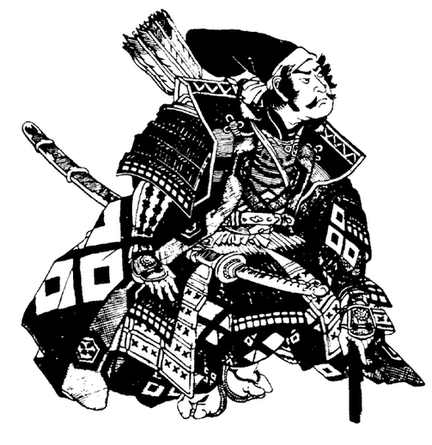

杂项装备
手榴弹
手榴弹是忍者常用的一种装备。它们并非现代意义上的手榴弹，不会以爆炸力量迸裂。相反，它们是小心吹空的蛋壳，里面装有各种粉末（也会使用掏空的坚果壳和纸包）。它们用于使对手失明并制造混乱。
使用手榴弹时，角色必须照常进行命中检定；未命中时的效果按类手榴弹投射物规则判定。由于内容物命中后会在小范围内散开，因此不受护甲修正影响。胡椒粉手榴弹只影响单一目标。受害者必须通过对毒素的豁免检定，否则因咳嗽和打喷嚏而失能 1–6 轮。尘粉手榴弹的作用方式相同，但受害者会失明 1–6 轮。
闪光粉手榴弹必须投到火源上，才能爆出耀眼的闪光。所有正看着光的人都会自动失明 1–3 轮。可能正在看、也可能没有看着光的角色，可以进行对石化的豁免检定。豁免成功表示角色未受影响；失败则产生上述效果。
毒烟手榴弹也必须投到火源上才能生效。手榴弹会爆开，形成一团恶臭刺鼻的烟雾。烟雾每轮扩散并充满一个 5 英尺见方的区域。区域内所有人都必须通过对毒素的豁免检定，否则会因恶臭、酸腐的气味而失明并失能。此外，烟雾中的所有角色每轮受到 1–2 点生命值伤害。每枚手榴弹所含的粉末足以充满一个 10 英尺见方的区域。烟雾会持续一回合，或直到被风吹散。
蛋壳手榴弹很脆弱，必须小心包装以免破裂。携带这些物品的角色若从 10 英尺或更高处跌落（并因此受到伤害），则必须为携带的每一枚手榴弹分别进行对粉碎打击的豁免检定。
马铠
与盾牌一样，卡拉图各地使用马铠的情况也各不相同。即使在使用马铠的地区，它也很少像盖金地区的马铠那样厚重或完整。不利的天气和对快速移动的需求通常限制了护甲的使用。
马铠由几种不同材料制成，并有半套和全套两种规格。半套覆盖马匹的头部、颈部和前躯；全套则覆盖全身。半套马铠比全套更常见。
最常见的马铠材料是绗缝软垫棉。其他马铠材料按一般使用频率递减，依次为皮革、皮鳞甲、brigandine、金属鳞甲和链甲。马铠从不使用板甲。通常只有重要贵族、将军和突击部队的坐骑才会披挂马铠。

表 55：披挂马匹的基础移动率
| 坐骑 | 软垫/皮革（全套/半套） | 金属鳞（全套/半套） | 链甲（全套/半套） |
|---|---|---|---|
| 轻型战马 | 21"/24" | 15"/21" | X/15" |
| 中型战马 | 17"/18" | 15"/17" | 12"/15" |
| 重型战马 | 15"/15" | 14"/15" | 13"/15" |
| 大象 | 12" | — | — |
斜线前的数字表示全套马铠，斜线后的数字表示半套马铠。X 表示马铠的重量超过该马匹的承载能力。
马铠对生物护甲等级的影响如下：
- 皮革或软垫马铠：AC 改善 1 级，重 160 磅。
- 金属鳞甲马铠：AC 改善 2 级，重 250 磅。
- 链甲马铠：AC 改善 3 级，重 350 磅。
半套马铠的重量为全套的一半，并且只改善正面攻击时的 AC；从后方发动的攻击不享有 AC 加值。战马除骑手和装备外，还必须能够承受马铠的重量。披挂马铠的战马，其移动率按以下方式降低：